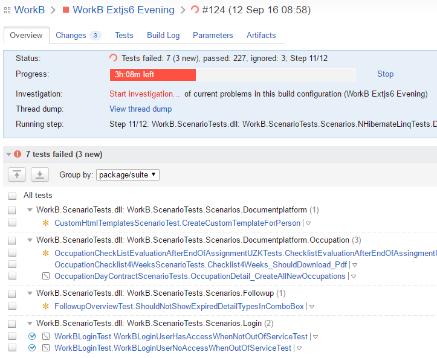
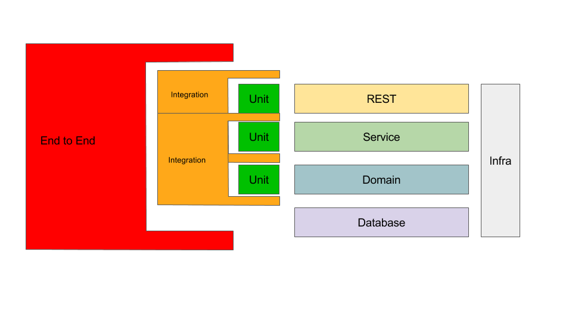

Test-Driven Design
Tim Schraepen & Wouter Groeneveld
12/12/2016
Introductie
Wouter
Prato, brood bakken, ...Tim
Cegeka, craftsmanship, leancoffee, pxl, ...Doel
- Jullie zelfzeker maken in TDD
- Zodat jullie dit kunnen overbrengen aan jullie leerlingen
- Door middel van TDD in jullie lessen te verwikkelen
| 9:10 | Setup laptops double check |
| 9:20 | Unit testing |
| 10:00 | TDD |
| 10:20 | Oefening: Basic Unit testing (JS) |
| 11:00 | Oefening: Legacy Code 1 (PHP) |
| 12:00 | Lunch |
| 13:00 | Oefening: Legacy Code 2 (PHP) |
| 15:00 | Oefening: TDD |
| 17:00 | Wat hebben we geleerd? |
TDD Deel 1:
Unit testing
Wat is Unit Testing
- Test Harnas
bvb. JUnit, MSTest - Assertion Framework
bvb. Assert.AreEquals(expected, actual); - TDD
Waarom unit testen?

Waarom unit testen?
- Early Feedback!
- Denk in code vanuit API standpunt
- Makkelijk voor pair om te volgen
- Alle mogelijke paden gedekt
- Documentatie
Oefening!
Oefening 1: speculaasEigenschappen van een goede test
- Ontdek sneller bugs
- Leesbaar
- Geautomatiseerd
- Snel & gefocuset (test 1 ding)
- Herhaalbaar
- Volgorde onafhankelijk
- Losgekoppeld van de implementatie
- Productie code makkelijker wijzigbaar
Geautomatiseerd
Living Documentation

Losgekoppeld van implementatie
Test Driven Development (TDD)
TDD: "bugfix" edge case
live demoSoorten testen

Unit Testing
- Onafhankelijk van externen (db, webservice, ...)
- Snel!
- Véél testen
- Test Happy Path & Edge Cases
- "Actieve vijand van de code"
Integration Testing
- Test geïntegreerd met externen (db, webservice, ...)
- Test integratie twee verschillende lagen
- Trager dan unit tests
- Minder test cases
Integration Testing
Test doubles
Integration Testing
- Mocks
- Stubs
- Spies
Details: zie Mocks aren't stubs by Martin Fowler.
End to End Testing
- Test hele applicatie!
- niet alle limieten
- traag, moelijker onderhoudbaar
- Test integratie alle lagen
Voorbeeldje/demo
Eventueel mee volgen intdd-course/labs/integrationtest-livedemo
En nu is het aan jullie!
TDD OefeningOm jullie te helpen om sneller te ontwikkelen:
Shortcuts cursus met IntelliJ
Resources
Boeken
Growing Object-Oriented Software Guided by Tests

Boeken
Clean Code

Boeken
Working Effectively With Legacy Code